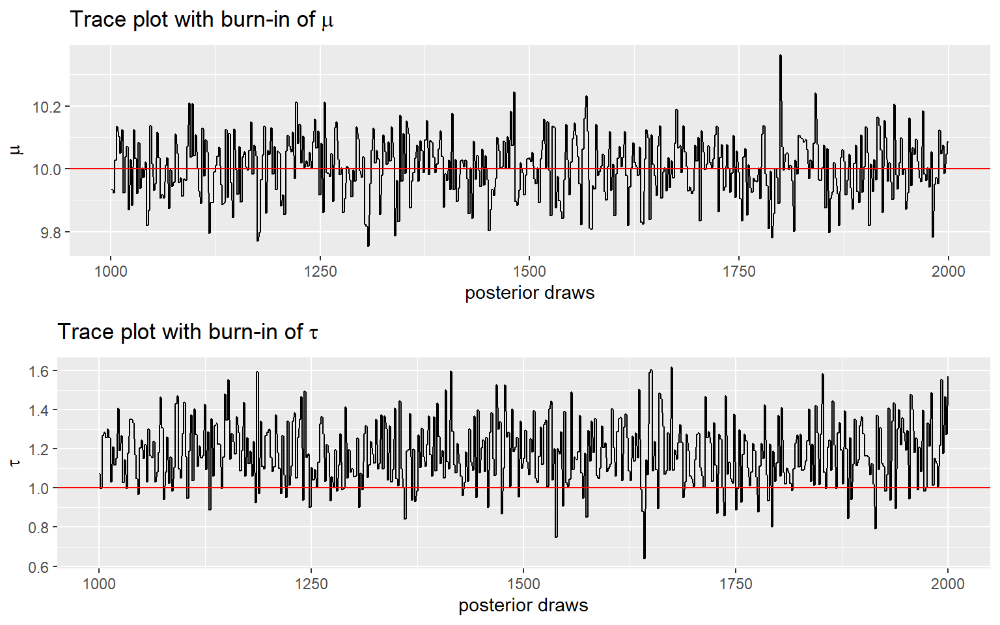
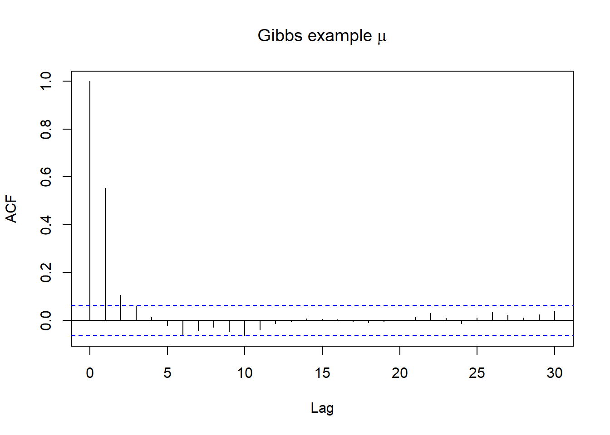

Session 5 Bayesian estimation with MCMC
- Introduction to MCMC and two common MCMC algorithm
- MCMC in action with brms on Bayesian modelling
- Learn about Markov chain diagnostics
## Error in completeSubclasses(classDef2, class1, obj, where) :
## trying to get slot "subclasses" from an object of a basic class ("NULL") with no slots5.1 Introduction to Markov Chain Monte Carlo Methods
Oftentimes, the posterior distribution might not be easily determined (as in the case of conjugate models), especially when we are modelling multiple parameters
We need numerical ways to compute posterior distribution
Recall the posterior distribution takes form
\[P(\theta \mid y) = \frac{P(y \mid \theta) \times P(\theta)}{ P(y)} = \frac{P(y \mid \theta) \ P(\theta)}{ \int P(y \mid \theta) \ P(\theta) \ d\theta}\] - The denominator \(\int P(y \mid \theta) \ P(\theta) \ d\theta\) is the challenging part to be determined numerically.
Markov chain simulation is used when it is not possible or not computationally efficient to sample \(\theta\) directly from \(P(\theta \mid y)\)
instead we sample iteratively to draw from a distribution that becomes closer to \(P(\theta \mid y)\)
Markov Chain simulation methods comprise a class of algorithms for sampling from a (complex) probability distribution and have application outside Bayesian statistics as well, especially in statistical optimization
- Markov chain is named after Russian mathematician Andrey Markov (1856-1922).
- A Markov chain or Markov process is a stochastic model describing a sequence of possible events in which the probability of each event depends only on the state attained in the previous event.
Monte Carlo sampling
- Notation:
- Let \(\theta = (\theta_1, \ldots, \theta_p)\) be the collection of \(p\) number of parameters in a Bayesian model
- Let \(Y = (Y_1, \ldots, Y_n)\) be the observed data of \(n\) subjects
- The posterior \(P(\theta \mid Y)\) is a probability distribution
- If \(\theta^{(1)}, \ldots, \theta^{(s)}\) are \(s\) samples from \(P(\theta \mid Y)\), then the mean of the \(s\) samples approximate the posterior mean!
- This posterior draws provides approximations of the posterior summaries of interest (e.g., posterior mean, posterior medium, P(theta < 0.9), etc)
- How to draw samples from some arbitrary distribution \(P(\theta \mid Y)\)?
- There are many algorithms and software options for performing MC sampling
- Software:
- OpenBUGS, WinBUGS, JAGS;
- STAN;
- INLA (Iteratively Nested Laplace Approximation, this is not MC)
- PyMC (via Python)
- In this session, we will introduce two MCMC algorithms: Metropolis algorithm and Gibbs sampler.
- brms package uses stan which samples following Hamiltonian Monte Carlo (HMC) algorithm and No-U-Turn Sampler (NUTS)
- HMC is a bit more complex, we will not cover the algorithm in this session, for those who are interested see http://www.mcmchandbook.net/HandbookChapter5.pdf and (Hoffman, Gelman, et al. 2014)
- HMC is documented to be more efficient then Gibbs and Metropolis algorithm (less iterations are needed).
- Online interactive MCMC demonstration app, https://chi-feng.github.io/mcmc-demo/
5.1.1 Gibbs sampling
As a simple example, suppose we want to estimate mean \(\mu\) and precision \(\tau = 1/\sigma^2\) of a normal distribution. We place the priors \(\mu \sim N(0,1)\) and \(\tau \sim Gamma(1,1)\).
\[ Y \mid \mu, \tau \sim N(\mu, \frac{1}{\tau})\] \[\mu \sim N(0,1)\] \[\tau \sim Gamma(1,1)\]
Then the conditional posterior distributions for \(\mu\) and \(\tau\) are
\[ P( \mu \mid \tau, Y) \propto N(\frac{\tau \sum_{i=1}^n y_i}{1 + n \tau},\frac{1}{1+n\tau})\]
\[ P( \tau \mid \mu, Y) \propto Gamma(1 + \frac{n}{2}, 1+\frac{\sum_{i=1}^n (y_i-\mu)^2}{2})\]
We want to alternate between sampling from these two conditional posteriors.
Let’s simulate \(n=100\) data, \(Y\), from N(10,1). The true data mean \(\mu = 10\) and \(\tau = 1\), our posterior distribution of \(\mu\) and \(\tau\) should approximate the true value
First, let’s complete Gibbs sampling with 10 draws
- we specify an initial value of \((\mu^{(1)}, \tau^{(1)}) = (1,1)\) to start our chain
- Given \(\tau^{(1)} = 1\), plug in this value to \(P( \mu \mid \tau, Y) \propto N(\frac{ \sum_{i=1}^{100} y_i}{1 + 100 },\frac{1}{1+100})\), now we draw 1 sample of \(\mu\), \(\mu^{(2)}\) from \(P( \mu \mid \tau, Y)\)
- Given \(\mu^{(1)} = 1\) plug in this value to \(P( \tau \mid \mu, Y) \propto Gamma(1 + \frac{100}{2}, 1+\frac{\sum_{i=1}^{100} (y_i-1)^2}{2})\), now we draw 1 sample of \(\tau\), \(\tau{(2)}\) from \(P( \tau \mid \mu, Y)\)
- we repeat sample 2 and 3 and construct a posterior set of \((\mu^{(1)}, \tau^{(1)}, \ldots, (\mu^{(10)}, \tau^{(10)}))\)
set.seed(123)
# Prior distribution for mu and tau;
prior_mean <- 0 # the prior on mu;
prior_precision <- 1 # the prior on mu;
prior_shape <- 1 # alpha in prior for precision;
prior_rate <- 1 # beta in prior for precision;
# data likelihood - simulated from N(10,1)
num_obs <- 100 # size of our data
true_mean <- 10
true_precision <- 1
Y <- rnorm(num_obs, true_mean, 1/sqrt(true_precision))
# number of Gibbs samples of posterior draws;
num_sample <- 10
# posterior sample vector initiated with NULL value;
mu <- rep(NA, num_sample)
tau <- rep(NA, num_sample)
#initialize values on mu and tau
mu[1] <- 1
tau[1] <- 1
for(i in 2:num_sample){
# i %% 2 means for i mod 2 == 0, that is for i with even value;
if(i %% 2){
mu[i] <- rnorm(
1,
mean = (prior_precision * prior_mean + tau[i-1] * sum(Y)) /
(prior_precision + num_obs * tau[i-1]),
sd = sqrt(1 / (prior_precision + num_obs * tau[i-1]))
)
tau[i] <- tau[i-1]
} else{
mu[i] <- mu[i-1]
tau[i] <- rgamma(
1,
shape = prior_shape + num_obs / 2,
rate = prior_rate + sum((Y - mu[i])^2) / 2
)
}
}
posterior <- data.frame(order = 1:num_sample, mu, tau)
ggplot(posterior, aes(x = mu, y = tau, label = order)) +
geom_point() +
geom_text(hjust=0, vjust=0) +
geom_path(aes(x = mu, y = tau), alpha = 0.3) +
ggtitle(paste0('Path plot of Gibbs sampling with ', num_sample, ' draws') )+
xlab(expression(mu)) +
ylab(expression(tau)) +
theme_bw()- Now, let’s complete Gibbs sampling with 2000 draws
- we also consider discarding the first 1000 draws (burn-in) and making posterior inference using only the last 900 draws!

p3 <- ggplot(posterior[(burnin+1):num_sample,]) +
geom_histogram(
aes(x = mu, y = stat(count) / sum(count)),
alpha = 0.5) +
geom_vline(
aes(xintercept = quantile(posterior[(burnin+1):num_sample,2], 0.025)),
color = 'red') +
geom_vline(
aes(xintercept = 10),
color = 'red') +
geom_vline(
aes(xintercept = quantile(posterior[(burnin+1):num_sample,2], 0.975)),
color = 'red') +
ylab('Posterior distribution - Relative frequency') +
xlab(expression(mu)) +
ggtitle(bquote('With burn-in, 95% credible interval of ' ~ mu))
p4 <- ggplot(posterior[(burnin+1):num_sample,]) +
geom_histogram(
aes(x = tau, y = stat(count) / sum(count)),
alpha = 0.5) +
geom_vline(
aes(xintercept = quantile(posterior[(burnin+1):num_sample,3], 0.025)),
color = 'red') +
geom_vline(
aes(xintercept = 1),
color = 'red') +
geom_vline(
aes(xintercept = quantile(posterior[(burnin+1):num_sample,3], 0.975)),
color = 'red') +
ylab('Posterior distribution - Relative frequency') +
xlab(expression(tau)) +
ggtitle(bquote('With burn-in, 95% credible interval of ' ~ tau))
ggarrange(p3, p4, nrow = 1)
p5 <- ggplot(posterior[(burnin+1):num_sample,]) +
geom_line(
aes(x = order, y = mu)) +
geom_hline(
aes(yintercept = 10),
color = 'red') +
ylab(expression(mu)) +
xlab('posterior draws') +
ggtitle(bquote('Trace plot with burn-in of' ~ mu))
p6 <- ggplot(posterior[(burnin+1):num_sample,]) +
geom_line(
aes(x = order, y = tau)) +
geom_hline(
aes(yintercept = 1),
color = 'red') +
ylab(expression(tau)) +
xlab('posterior draws') +
ggtitle(bquote('Trace plot with burn-in of' ~ tau))
ggarrange(p5, p6, nrow = 2)
Summary
- OpenBUGS, WinBUGS, and JAGS use Gibbs sampling
- Gibbs sampling relies on conditional distributions as proposal distributions to sample each dimension the posterior distributions.
- Gibbs sampling generates a Markov chain of samples, each of which is correlated with nearby samples.
- in the example here, the next draw is sampled from posterior calculated using the previous draw!
- Generally, samples from the beginning of the chain (the burn-in period) may not accurately represent the desired distribution and are usually discarded
5.1.2 Metropolis algorithm
Metropolis algorithm is an adaptation of a random walk with an acceptance/rejection rule to converge to a specified distribution
The algorithm generally follows the following steps (following the Gibbs’ example):
We specify an initial value of \((\mu^{(1)}, \tau^{(1)}) = (1,1)\) to start our chain
Sample from a proposal joint distribution values for \((\mu^{(propose)}, \tau^{(propose)})\)
Calculate the ratio (r) of the densities
\[r = \frac{P(\mu^{(propose)}, \tau^{(propose)} \mid y)}{P(\mu^{(1)}, \tau^{(1)} \mid y)} = \frac{P(y \mid \mu^{(propose)}, \tau^{(propose)}) P(\mu^{(propose)}) P(\tau^{(propose)})}{P(y \mid \mu^{(1)}, \tau^{(1)}) P(\mu^{(1)}) P(\tau^{(1)})}\] - for this step, we can format the ratio in its log scale for easy calculation, log(r)!
Sample “u” from an uniform distribution, \(u \sim Unif(0,1)\)
accept the proposed values, \((\mu^{(2)}, \tau^{(2)}) = (\mu^{(propose)}, \tau^{(propose)})\) if \(u < \min(1,r)\), otherwise reject the proposed values, keep \((\mu^{(2)}, \tau^{(2)}) = (\mu^{(1)}, \tau^{(1)})\)
repeat step 2 to 5 for multiple iterations, forming our posterior draws!
- For this demonstration, we complete 10,000 iterations with first 5000 draws as burn-in
############################
##Joint distribution of mu and tau
###########################
loglikelihood<-function(data,mu,sigma){
loglikelihoodValue=0
loglikelihoodValue=sum(dnorm(data,mean=mu,sd=sigma,log=TRUE))
return(loglikelihoodValue)
}
priormu <- function(mu){
return(dnorm(mu,0,1,log=TRUE))
}
priorsigma2 <- function(sigma2){
return(dunif(sigma2,min=0,max=100,log=TRUE))
}
joint <- function(mu,sigma){
data=Y
return (loglikelihood(data,mu,sigma) + priormu(mu)+priorsigma2(sigma^2))
}
#Defining the Metropolis Algorithm as a function
#the arguments of the functions are the initial values for mu and sigma passed as a vector (startvalue) and the total number of iterations.
run_Metropolis <- function(startvalue, iterations){
#Matrix to save the 2 parameters of the chain
#Number of rows= number of iterations +1 and number of columns equals to the number of parameters.(2)
chain = array(dim = c(iterations+1,2))
#Initialize the first row of the chain matrix with the initial values for the parameters.
chain[1,] = startvalue
#variables that save the number of accepted and rejected values
naceito=0
nrejeitado=0
#Loop with Metropolis Algorithm
for (i in 1:iterations){
#Proposal value for mu. This is a sample from a normal distribution with mean equals to the mu value of the previous step of the chain and standard deviation equals to 1.
proposalmu=rnorm(1,mean= chain[i,1],sd=0.1)
#Proposal value for sigma. This is a sample from an uniform distribution with tuning adjustment;
proposalsigma=chain[i,2]+runif(1,min=-0.5,max=0.5)
#Log of the Acceptance ratio for Metropolis Algorithm
razao=joint(proposalmu,proposalsigma)-joint(chain[i,1],chain[i,2])
#Error treatment. If for some reason the ratio results in a not a number value then we keep the same value of the current step for the next step of the chain.
if (exp(razao) == "NaN"){
chain[i+1,]=chain[i,]
nrejeitado=nrejeitado+1
}
else
# Draw a number between 0 and 1 and compare it with the calculated ratio of acceptance. Once we used the log of the ratio, we need to power it to "e" exponent to recover the correct scale of the real ratio.
if(runif(1,0,1)<min(1,exp(razao))){
chain[i+1,]=c(proposalmu,proposalsigma)
#counting acceptance
naceito=naceito+1
}
else{
#Rejecting the proposal value and keeping the current parameters value to the next step of the chain.
chain[i+1,] = chain[i,]
nrejeitado=nrejeitado+1
}
}
#Creates and returns a list with the chain with all parameters values, the number of accepted and rejected values
lista=list(chain,naceito,nrejeitado)
return(lista)
}
#Running the model
#Setting the number of iterations
iterations=10000
#Setting the initial values for mu and sigma
startvalue=c(1,1)
#Calling Metropolis function and saving the output in resultsM variable
resultsM=run_Metropolis(startvalue,iterations)
#Computing the acceptance rate
acptRate=resultsM[[2]]/(resultsM[[3]])
print(paste("acceptance rate:", round(acptRate,2))) ## [1] "acceptance rate: 0.22"#Recording the chain for mu and sigma
chainM=data.frame(order = 1:(iterations+1),
mu = resultsM[[1]][,1],
sigma = resultsM[[1]][,2]) Summary
Summary
Metropolis-Hastings (MH) generalizes Metropolis algorithm to non-symmetric proposal distributions while maintaining detailed balance.
Metropolis algorithm requires us to specify a proposal distribution involving some tuning, this can be tricky to set-up. A “bad” tuning parameter can result in lower acceptance rate (i.e., proposed value keeps getting rejected).
Metropolis algorithm generates a Markov chain of samples, each of which is correlated with nearby samples.
- in the example here, the next proposed value for \(\mu\) and \(\sigma\) is sampled from the proposal distribution using the previous draw!
Again, it’s a good practice to discard beginning of the chain!
5.2 MCMC diganostics - assess convergence
What does a good Markov chain look like?
How can we tell if our Markov chain sample produces a reasonable approximation of the posterior?
How big should our Markov chain sample size be? How many iterations to run?
In this section, we provide a few diagnostic rules and principles
A good reference paper on Bayesian workflow: https://arxiv.org/pdf/2011.01808.pdf, (Gelman et al. 2020)
Figure 5.1: Bayesian workflow - Figure 1 from Gelman at al 2020
1. Choose good initial values and discard early iterations
2. Assessing convergence in long-run
A commonly used numerical index in diagnosing convergence is \(\hat{R}\), also called the potential scale reduction factor, proposed by Gelman and Rubin (1992) and later an extension for multivariate distributions by Brooks and Gelman (1997).
\(\hat{R}\) measures the ratio of the total variability combining multiple chains to the within-chain variability.
- recall in ANOVA, the \(F\)-ratio is a measure of
\[F = \frac{\text{Between-group difference} + \text{error}}{\text{error}}\]
- \(\hat{R}\) has a very similar meaning conceptually, with
errormeaning the within-chain variance.- after the chains converge, there should be no differences between the chains, and so\(\hat{R}\) should be very close to 1.0.
- It’s recommended an \(\hat{R}\) less than 1.1 for acceptable convergence of the Markov chains, but more recently a more stringent cutoff of 1.01 is proposed.
Good Mixing - trace plot and auto-correlation plot
One thing you should look at to diagnose the convergence of a Markov chain is the trace plot.
Good mixing behaviour as it explores the region with most of the density smoothly and bounces from one point to another quickly.
Bad mixing:
- although in every iteration a jump is made to a new value, the jump to the new value is relatively small, so it gonna takes a long time to get from one end of the distribution to another end,
- and it rarely explores all regions, therefore, if you stop the chain “early,” you can get a biased representation of the posterior distribution.
Dependence of the iterations
Autocorrelation provides another metric by which to evaluate whether our Markov chain sufficiently mimics the behaviour of an independent sample.
Strong autocorrelation or dependence is a bad thing – it goes hand in hand with small effective sample size ratios, and thus provides a warning sign that our resulting posterior approximations might be unreliable.
Autocorrelation
- Lag 1 autocorrelation measures the correlation between pairs of Markov chain values that are one “step” apart
- Lag k autocorrelation measures the correlation between pairs of Markov chain values that are k “steps” apart
- we can look at ACF plot for diagnostics, in R this can be examined using acf() function!
# Gibbs example;
acf(posterior[(1000+1):length(posterior$mu),2], main=expression(paste("Gibbs example ",mu)))
acf(posterior[(1000+1):length(posterior$tau),3], main=expression(paste("Gibbs example ",tau)))Thinning
- we can perform thinning to achieve faster convergence!
- thinning the MCMC by keeping every kth simulation draw and discarding the rest
- for example, thin = 5, referring to keeping the 5th, 10th, …, draws only! If the total MCMC iteration is 2000, for thin = 5, we will end-up with a posterior sample distribution of size = 2000/5 = 400.
5.2.1 Acceptance Rate
If you’re using the Metropolis/MH algorithm, you want to monitor the acceptance rate and make sure it is within optimal range.
If you accept almost every time, that tells you that each time the chain only jumps a very small step (so that the acceptance ratio is close to 1 every time), which will make the algorithm slow in converging to the stationary distribution.
If the acceptance rate is very low, then that says that the chain got stuck to just a few locations and it takes hundreds of iterations for it to make one jump.
For the Metropolis/MH algorithm, an optimal acceptance rate would be something between 10% to 60%.
5.2.2 Diagnostics Using Multiple Chains
Another important thing to check is to see the convergence with multiple chains.
So far we’ve been just talking about one chain, but it is common practice to use two or more chains (and 4 chains are generally recommended nowadays),
- each starting at a different, preferably more extreme, place, and see whether they explore a similar region.
5.3 Example Bayesian modelling with brms
5.3.1 Example Bayesian logistic regression model
In this example, we will conduct an analysis using a Bayesian logistic regression model.
Data come from a cross-sectional study of 1,225 smokers over the age of 40.
Each participant was assessed for chronic obstructive pulmonary disease (COPD), and characteristics of the type of cigarette they most frequently smoke were recorded.
The objective of the study was to identify associations between COPD diagnosis and cigarette characteristics
We will use the following variables from this data set:
TYPE: Type of cigarette, 1 = Menthol, 0 = Regular
NIC: Nicotine content, in mg
TAR: Tar content, in mg
LEN: Length of cigarette, in mm
FLTR: 1 = Filter, 0 = No Vlter
copd: 1 = COPD diagnosis, 0 = no COPD diagnosis
| BRAND_NAME | TYPE | NIC | TAR | CO | LEN | FLTR | PACK | STRENGTH | STYLE | OTHER | pcopd | copd |
|---|---|---|---|---|---|---|---|---|---|---|---|---|
| ACCORD | 0 | 0.2 | 3 | 1 | 68 | 1 | HARD | REGULAR | 0.0752199 | 0 | ||
| ACCORD | 0 | 0.3 | 5 | 1 | 68 | 1 | HARD | REGULAR | 0.0808916 | 0 | ||
| American | 0 | 0.8 | 14 | 14 | 83 | 1 | HARD | FULL FLAVOR | 0.1009402 | 0 | ||
| Austin | 0 | 0.9 | 15 | 15 | 83 | 1 | HARD | FULL FLAVOR | 0.1083241 | 0 | ||
| Austin | 0 | 0.8 | 11 | 13 | 83 | 1 | HARD | LIGHT | 0.1009402 | 0 | ||
| Austin | 0 | 0.9 | 15 | 16 | 84 | 1 | SOFT | FULL FLAVOR | 0.1073572 | 0 |
We fit a simple logistic regression, predicting the risk of Copd by Type of cigarette, Nicotine content, and Filter status.
We specify uninformative prior on log.odds, \(N(0,10)\)
m1_bern <- brm(copd ~ TYPE + NIC + FLTR,
data = copd,
family = bernoulli(link = "logit"),
prior = c(prior(normal(0,10), class = "b"),
prior(normal(0,10), class = "Intercept")),
seed = 123, silent = 2, refresh = 0)
saveRDS(m1_bern, file="data/chp6_logistic")m1_bern <- readRDS("data/chp6_logistic")
summary(m1_bern)## Family: bernoulli
## Links: mu = logit
## Formula: copd ~ TYPE + NIC + FLTR
## Data: copd (Number of observations: 1225)
## Draws: 4 chains, each with iter = 2000; warmup = 1000; thin = 1;
## total post-warmup draws = 4000
##
## Population-Level Effects:
## Estimate Est.Error l-95% CI u-95% CI Rhat Bulk_ESS Tail_ESS
## Intercept -2.94 0.64 -4.20 -1.71 1.00 3108 2483
## TYPE 0.25 0.21 -0.19 0.66 1.00 3480 2501
## NIC 1.30 0.35 0.61 1.99 1.00 3306 2723
## FLTR -0.60 0.44 -1.42 0.29 1.00 3344 2878
##
## Draws were sampled using sampling(NUTS). For each parameter, Bulk_ESS
## and Tail_ESS are effective sample size measures, and Rhat is the potential
## scale reduction factor on split chains (at convergence, Rhat = 1).# Directly from the posterior of exp(beta):
draws_beta_TYPE <- as.matrix(m1_bern, pars = "b_TYPE")
exp_beta_TYPE <- exp(draws_beta_TYPE)
quantile(exp_beta_TYPE, probs = c(.025, 0.5, .975))## 2.5% 50% 97.5%
## 0.8286483 1.2832394 1.9293951plot(m1_bern)Figure 5.2: Posterior Distribution + Trace plot combining all chains
- Good mixing from trace plot
- Rhats’ are all less then 1.01, convergence!
- Other diagnostic plots below
mcmc_dens_overlay(m1_bern, pars = c("b_Intercept", "b_TYPE", "b_NIC", "b_FLTR"))Figure 5.3: Posterior density plot by chain
mcmc_rank_hist(m1_bern, pars = c("b_Intercept", "b_TYPE", "b_NIC", "b_FLTR"))Figure 5.4: Rank plot of multiple chains
mcmc_acf_bar(m1_bern, pars = c("b_Intercept", "b_TYPE", "b_NIC", "b_FLTR"))Figure 5.5: Autocorrelation plot by chain
R Session information
## R version 4.0.5 (2021-03-31)
## Platform: x86_64-w64-mingw32/x64 (64-bit)
## Running under: Windows 10 x64 (build 19044)
##
## Matrix products:
##
## locale:
## [1] LC_COLLATE=English_Canada.1252 LC_CTYPE=English_Canada.1252
## [3] LC_MONETARY=English_Canada.1252 LC_NUMERIC=C
## [5] LC_TIME=English_Canada.1252
##
## attached base packages:
## [1] grid stats graphics grDevices utils datasets methods
## [8] base
##
## other attached packages:
## [1] invgamma_1.1 extraDistr_1.9.1 MCMCpack_1.6-1
## [4] MASS_7.3-53.1 coda_0.19-4 SHELF_1.8.0
## [7] bayesplot_1.9.0 ggmcmc_1.5.1.1 tidyr_1.2.0
## [10] ggpubr_0.4.0 tweenr_1.0.2 gganimate_1.0.7
## [13] VennDiagram_1.7.1 futile.logger_1.4.3 truncnorm_1.0-8
## [16] brms_2.16.3 Rcpp_1.0.8.3 dplyr_1.0.8
## [19] ggplot2_3.3.5